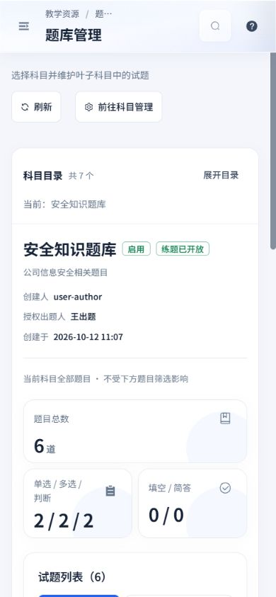
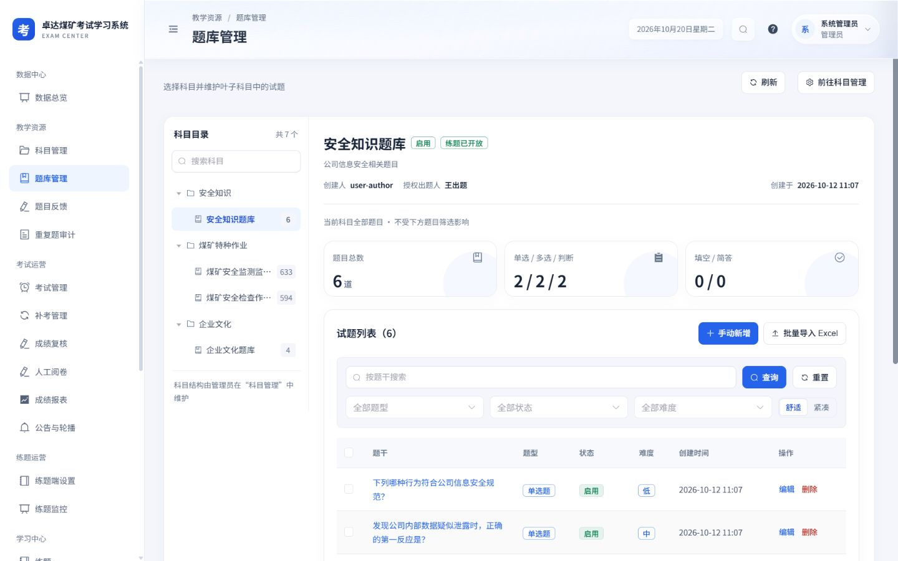
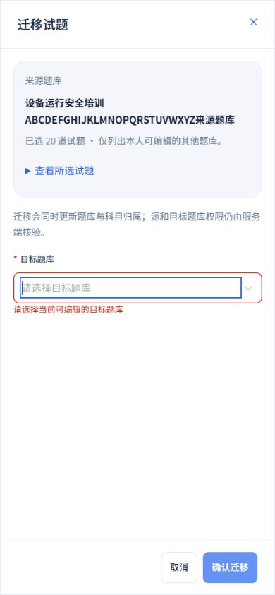
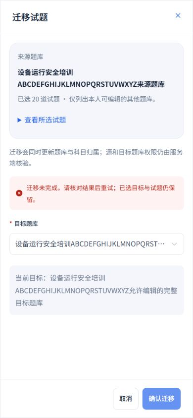
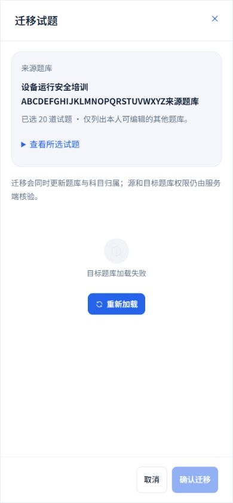
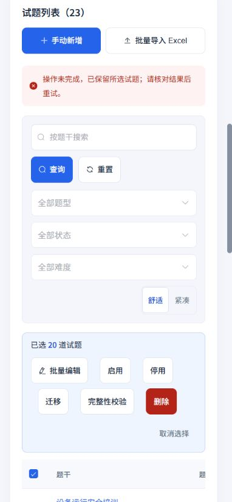

2026-10-20 · Workbuddy 01 · 本轮本地实施：题库详情、迁移、完整性校验与只读题干
完整上下文，可恢复的题库维护
沿用现行玻璃顶栏、白侧栏、浅灰蓝底、蓝色操作与16 px卡片。补齐题库维护中的长内容、确认与请求锁定、错误恢复及手机全屏弹窗；服务端、题型、权限与原有安全规则保持。
本轮落地
- 题库名称及说明完整换行、保留段落；手机统计标签按词换行，沿用总数、单选 / 多选 / 判断、填空 / 简答的现行分组。列表加载时显示未知数量，首屏统计只发起一次请求。
- 迁移冻结打开时的来源、原题ID及完整题干，可展开核对所选试题。候选仅限其他可编辑题库，已选目标完整显示；空目标就地校验并聚焦，目标读取失败与没有目标分别显示。
- 迁移失败保留原目标与所选试题，提示滚动到可见区域；确认及请求期间锁定选择、筛选、分页和重复维护。成功才清空选择，切换科目后的旧响应不刷新新题库或覆盖其状态。
- 完整性校验采用独立结果弹窗，按接口affected及issues显示本次处理与问题数量，保留时间、来源、原题干及每条问题；每页10道问题，可进入原题编辑，并可再次打开上次结果。明确编辑后需要重新校验。
- 题干改为44 px可访问阅读入口，完整内容在手机全屏显示，仅展示原列表已取得的题干、来源、题型、状态及难度；只读角色不出现维护入口，也不增加答案权限。
- 单题、批量删除的确认和请求防重入，确认显示原题或真实数量；失败保留题目或选择并提示核对。批量操作前明确现有服务端500道上限，避免超量选择被静默截断；原引用、练题历史及服务端权限限制保持。
实际页面只读核验
管理员读取“安全知识题库”：总数6道，单选 / 多选 / 判断为2 / 2 / 2，填空 / 简答为0 / 0。手机首行位于74 px顶栏下方的90 px位置；桌面、横屏及手机均无整页横向溢出。
实际核验仅读取题库与完整题干；迁移、删除、校验和失败响应均使用隔离模拟接口验证。




迁移与失败恢复样例
以下由真实Vue组件配合隔离模拟接口生成。20道所选试题、长名称及失败响应均为样例，不写入业务接口。








校验与只读内容样例


结果第二页进入编辑时沿用原题ID sample-q10及原字段；仅核对编辑交接，未保存样例修改。全部校验结果保留服务端原始问题说明。
验证结果
- 4个测试文件共51项通过：批量确认与请求锁定、失败草稿、500道上限、原题编辑、只读权限、旧响应隔离，及现有目录、公共组件和全页面设计覆盖。
- 25组布局记录覆盖320×740、390×844、844×390、1440×900；整页与所测弹窗无横向溢出，所测底栏均在视口内。校验第二页、目标错误 / 空态与失败自动定位均核验。
- TypeScript、生产构建、设计脚本语法、62个目录源文件及Git差异空白检查通过。题库条目稳定ID保持，补充迁移、校验结果和完整题干三个弹窗设计。